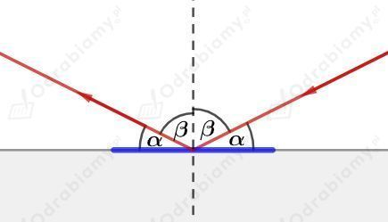
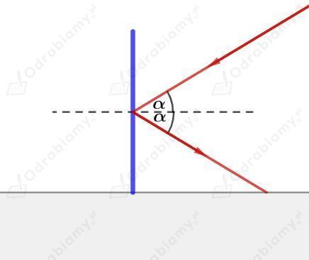

Ustawiamy zdania, tak aby stworzyły logiczny ciąg wypowiedzi:
IV. Teoria Maxwella została ostatecznie potwierdzona, gdy okazało się, że trafnie przewiduje istnienie fal elektromagnetycznych.
III. Podobnie było z teorią grawitacji Izaaka Newtona, która pozwoliła odkryć nieznaną wcześniej planetę - Neptuna.
I. Astronomowie obserwowali, że Uran, wówczas najdalsza znana planeta, porusza się nieco inaczej, niż wynikałoby to z prawa grawitacji.
V. Założyli więc, że na jego ruch wpływa nieznana planeta i obliczyli, gdzie powinna się znajdować.
II. Okazało się, że planetę zaobserwowano w przewidywanym miejscu.
a)
Powierzchnie falowe oznaczono kolorem niebieskim - powierzchnie falowe wyznaczają położenie punktów ośrodka znajdujących się w takim samym chwilowym wychyleniu (np. na grzbietach fal).
Promienie falowe oznaczono kolorem czerwonym - promienie falowe wyznaczają kierunek rozchodzenia się fali.
b)
Falę kolistą przedstawia rysunek A - powierzchnie falowe są okręgami.
Falę płaską przedstawia rysunek B - powierzchnie falowe są płaszczyznami lub prostymi równoległymi do siebie.
c)
Światło lasera możemy przedstawić jako falę płaską - rysunek B.
Światło żarówki możemy przedstawić jako falę kulistą - rysunek A.
Zgodnie z prawem odbicia kąt padania promienia światła jest równy kątowi odbicia promienia światła. Kąt padania i odbicia liczymy względem normalnej - prostej prostopadłej do powierzchni odbijającej.
a)

Kąty padania i odbicia wynoszą:
b)

Kąty padania i odbicia wynoszą:
W przypadku białej kartki papieru prawie całe światło padające na kartkę ulega odbiciu, ale odbija się ono w różnych kierunkach. Światło odbija się od powierzchni kartki w różne strony, ponieważ powierzchnia kartki nie jest idealnie gładka. W dużym powiększeniu powierzchnia kartki papieru jest bardzo nieregularna. Światło odbija się od tych nieregularności powierzchni zgodnie z prawem odbicia, co wypadkowo daje rozproszenie światła w różnych kierunkach.
Dlatego powierzchnie luster poleruje się, aby uzyskać jak najbardziej gładką powierzchnię. Wedy padające światło odbija się w ustalonym kierunku i tworzy obraz przedmiotu znajdujący się przed lustrem.
Dźwięk porusza się w powietrzu z prędkością:
Czas, po którym turysta usłyszał echo wynosi:
Echo to dźwięk, który został odbity i powrócił do nas. Zatem krzyk turysty przebywa drogę od turysty do domów i po odbiciu drogę od domów do turysty.
Drogę przebytą przez dźwięk wyrazimy jako:
Odległość turysty od domków wynosi:
Taką wiązkę widać:
C. w dymie.
D. we mgle nad dzióbkiem czajnika.
Wiązka lasera jest w normalnych warunkach niewidoczna. Możemy ją zaobserwować tylko w warunkach kiedy taka wiązka będzie silnie rozpraszana na cząsteczkach ośrodka - np. na cząsteczkach dymu lub wody.